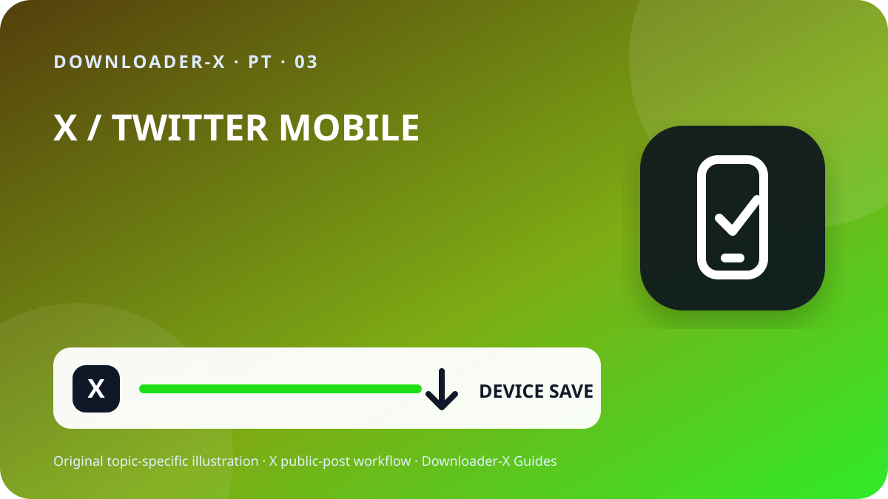

Resposta rápida
como baixar video do twitter no celular — Abra a publicação individual do X que contém o vídeo, confirme que ela é pública e use Compartilhar para copiar o link. Cole a URL no Downloader-X, selecione uma variante MP4 que apareça de verdade e reproduza o início, o meio e o fim depois de salvar. Use o processo somente para seus vídeos, mídia com licença compatível ou conteúdo autorizado pelo proprietário. Um fluxo de link público não deve pedir senha do X, código de verificação, cookie do navegador nem acesso remoto.

Três passos com o Downloader-X
- O link deve identificar uma única publicação com o vídeo. No X, abra Compartilhar, copie o link da publicação e teste uma vez em nova aba. URLs de perfil ou linha do tempo contêm vários posts e não definem a mídia desejada. Essa verificação separa endereço incorreto de falha do serviço e reduz cliques repetidos que geram arquivos incompletos ou duplicados.
- Cole a URL verificada no downloader do X e inicie o processamento apenas uma vez. Espere as opções reais e compare o título ou a prévia com a publicação original. Selecione somente formatos e resoluções que aparecem de fato. Não trate promessa de 4K, 1080p ou ausência de marca como capacidade real quando a fonte não oferece. Em falha, deve aparecer um erro claro; uma página HTML, instalador ou arquivo incorreto não pode ser apresentado como vídeo concluído.
- A tarefa termina quando o arquivo abre como vídeo real, não quando a barra de progresso desaparece. Antes de arquivar ou compartilhar, confira:
O que esta pesquisa significa
como baixar video do twitter no celular. Somente publicações públicas. Formato e qualidade dependem das opções reais fornecidas pela fonte.
1. Verificar acesso público e direitos de uso
Comece pela publicação original, não por perfil, busca, captura de tela ou prévia encaminhada. Abra a URL em nova aba e compare conta, texto, miniatura e duração. Visibilidade pública indica acesso atual, não autorização automática para republicar, editar, vender ou usar em publicidade. Se a conta estiver protegida, a publicação removida, exigir acesso especial ou tiver restrição, pare e peça uma cópia autorizada ao proprietário em vez de tentar contornar o controle.
Visibilidade pública é configuração de acesso, não licença. Salve seus vídeos, mídia com licença compatível ou conteúdo claramente autorizado. Para republicar, editar ou usar comercialmente, confirme que a permissão cobre esse objetivo e guarde prova escrita. Respeite pessoas, dados privados, locais sensíveis e menores presentes no vídeo, e não apresente o trabalho de outra pessoa como seu.
2. Copiar a URL exata da publicação
O link deve identificar uma única publicação com o vídeo. No X, abra Compartilhar, copie o link da publicação e teste uma vez em nova aba. URLs de perfil ou linha do tempo contêm vários posts e não definem a mídia desejada. Essa verificação separa endereço incorreto de falha do serviço e reduz cliques repetidos que geram arquivos incompletos ou duplicados.
Abra a publicação original de vídeo na página individual.
Use Compartilhar para copiar o link sem digitar a URL manualmente.
Confirme domínio x.com ou twitter.com e endereço de publicação.
Teste em nova aba e compare conta, texto, miniatura e vídeo.
Guarde a URL fonte e a prova de autorização junto ao arquivo.
5. Salvar no iPhone, Android, Windows ou Mac
No iPhone e iPad, downloads do Safari costumam ficar no app Arquivos, em Downloads ou no local configurado. No Android, veja a lista do navegador ou o app Files. No Windows, macOS, Linux e ChromeOS, confira a pasta Downloads e o histórico antes de clicar novamente. Se faltar espaço, apague cópias desnecessárias ou escolha resolução menor. Não instale gerenciador desconhecido apenas porque uma página diz que é obrigatório.
3. Colar o link e escolher somente resultados reais
Cole a URL verificada no downloader do X e inicie o processamento apenas uma vez. Espere as opções reais e compare o título ou a prévia com a publicação original. Selecione somente formatos e resoluções que aparecem de fato. Não trate promessa de 4K, 1080p ou ausência de marca como capacidade real quando a fonte não oferece. Em falha, deve aparecer um erro claro; uma página HTML, instalador ou arquivo incorreto não pode ser apresentado como vídeo concluído.
6. Verificar o arquivo salvo
A tarefa termina quando o arquivo abre como vídeo real, não quando a barra de progresso desaparece. Antes de arquivar ou compartilhar, confira:
O tipo corresponde à escolha, como MP4, e não é HTML ou instalador.
O tamanho não é zero e é plausível para duração e qualidade.
Início, meio e fim reproduzem imagem, duração e áudio corretamente.
Nome, pasta, URL fonte e autorização estão documentados.
Organizar arquivos e evitar duplicatas
Use nome com tema curto, conta, data e qualidade, por exemplo topic_creator_2026-08-30_720p.mp4. Separe pastas temporárias e verificadas e mantenha só as variantes necessárias. Clicar várias vezes não melhora a imagem; normalmente cria duplicata ou arquivo parcial. Guarde URL, crédito e condições de uso em nota ou planilha do projeto.
Resolver problemas da fonte ao arquivo
Volte à publicação de vídeo e copie por Compartilhar; o perfil não identifica uma mídia.
Pode ser protegido ou limitado. Não entregue credenciais ou cookies; peça uma cópia autorizada.
Confirme que a publicação existe, tem vídeo nativo e abre pela URL; atualize uma vez.
Apague o arquivo, não troque a extensão e revise URL e opção de vídeo real.
Confira a fonte, volume e outro player confiável; escolha variante combinada se necessário.
Segurança e privacidade
Um fluxo de link público não precisa de senha do X, código em duas etapas, cookie exportado, controle remoto, executável ou desativação de proteção. Pare se uma página oferecer .exe, .dmg ou extensão sem relação. Verifique domínio, tipo e origem antes de abrir. Em dispositivo compartilhado, mova arquivos autorizados para fora de pastas públicas e apague cópias temporárias desnecessárias.
4. Escolher HD conforme a fonte e a finalidade
Uma indicação HD é confiável somente quando corresponde a uma variante realmente disponível na publicação pública. Em celular e notebook, 720p costuma equilibrar nitidez, dados e armazenamento. 1080p é útil em telas maiores quando a origem realmente oferece. Dois arquivos com a mesma resolução podem ter bitrate, codec e compressão diferentes; reproduza-os em vez de julgar pelo nome. Se o áudio for necessário, escolha uma opção combinada de vídeo e som e confira a faixa logo após salvar.
Documentar a fonte antes de guardar
Em projetos com vários clipes, registre conta, data, URL permanente, descrição curta, variante escolhida, tamanho e base da autorização. Isso evita arquivos sem origem e facilita revisar crédito ou licença. Em quote post, resposta ou thread, copie a URL da publicação que realmente contém o vídeo, não daquela que apenas menciona ou cita o conteúdo.
Checklist final de 60 segundos
A URL abre a publicação correta de vídeo.
A publicação é pública sem contornar controle.
Você é proprietário ou tem permissão para salvar.
O serviço não pede credenciais ou cookies.
A qualidade escolhida aparece no resultado real.
Tipo e tamanho do arquivo são plausíveis.
O uso posterior permanece dentro da autorização.
Verificações para evitar resultados errados
Guia prático do X · 1
Teste em nova aba e compare conta, texto, miniatura e vídeo.
O tipo corresponde à escolha, como MP4, e não é HTML ou instalador.
O serviço não pede credenciais ou cookies.
Abra a publicação original de vídeo na página individual.
A qualidade escolhida aparece no resultado real.
Guia prático do X · 2
Volte à publicação de vídeo e copie por Compartilhar; o perfil não identifica uma mídia.
A resolução depende do arquivo de origem e das variantes realmente disponíveis.
Não automaticamente. É preciso licença ou permissão para redistribuição e uso previsto.
O uso posterior permanece dentro da autorização.
No iPhone e iPad, downloads do Safari costumam ficar no app Arquivos, em Downloads ou no local configurado. No Android, veja a lista do navegador ou o app Files. No Windows, macOS, Linux e ChromeOS, confira a pasta Downloads e o histórico antes de clicar novamente. Se faltar espaço, apague cópias desnecessárias ou escolha resolução menor. Não instale gerenciador desconhecido apenas porque uma página diz que é obrigatório.
Guia prático do X · 3
O tamanho não é zero e é plausível para duração e qualidade.
Um fluxo de link público não precisa de senha do X, código em duas etapas, cookie exportado, controle remoto, executável ou desativação de proteção. Pare se uma página oferecer .exe, .dmg ou extensão sem relação. Verifique domínio, tipo e origem antes de abrir. Em dispositivo compartilhado, mova arquivos autorizados para fora de pastas públicas e apague cópias temporárias desnecessárias.
Use Compartilhar para copiar o link sem digitar a URL manualmente.
Perguntas frequentes
como baixar video do twitter no celular?
Somente publicações públicas. Formato e qualidade dependem das opções reais fornecidas pela fonte.
O que fazer se vier HTML?
Apague, não renomeie e verifique novamente a URL e a opção de vídeo.
Uma publicação pública pode ser republicada?
Não automaticamente. É preciso licença ou permissão para redistribuição e uso previsto.
Por que 1080p nem sempre aparece?
A resolução depende do arquivo de origem e das variantes realmente disponíveis.
Links x.com e twitter.com funcionam?
Sim, se ambos abrirem a mesma publicação pública e o destino tiver sido verificado.
Guias relacionados do X
Use o link exato da publicação pública
Somente publicações públicas. Formato e qualidade dependem das opções reais fornecidas pela fonte.
Abrir o Downloader-X